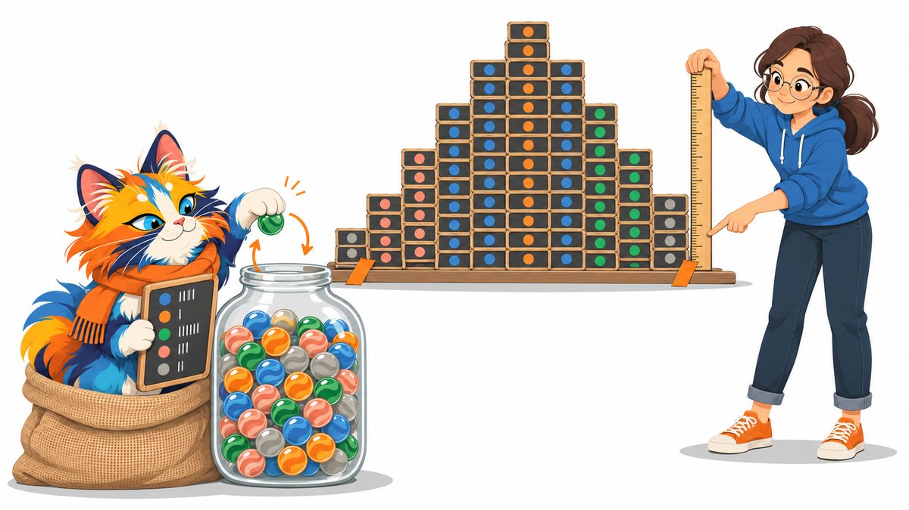
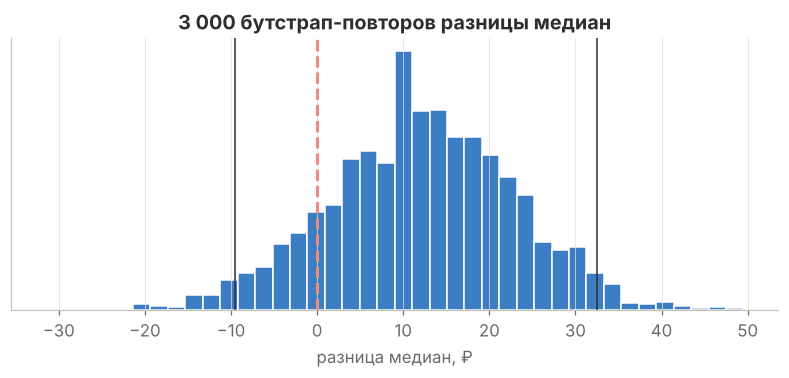

Занятие 5 · блок 6
Бутстрап

Для среднего у нас есть формула SE. Для медианы, 90-го перцентиля, отношения двух медиан формулы либо страшные, либо их нет. Бутстрап даёт интервал для любой статистики одним циклом — ценой вычислений.
Бутстрап
Выборка — лучшее, что мы знаем о распределении. Пересэмплируем её: берём элементов с возвращением из тех же , считаем статистику; повторяем раз — от 1 000 до 10 000. Разброс значений статистики имитирует разброс статистики между настоящими повторами эксперимента.
- SE — стандартное отклонение бутстрап-значений.
- Перцентильный 95%-й интервал — 2.5-й и 97.5-й перцентили бутстрап-значений.
- Для A/B пересэмплируем каждую группу отдельно, и пользователей, а не события — единица та же, что в рандомизации. Считаем разницу статистик.
Задача 8. Интервал для медианы чека
В тесте и контроле по 3 000 чеков. Медиана выросла на 14 ₽. Построй бутстрапом 95%-й интервал для разницы медиан. Значимо?
Бутстрап-повторы разницы медиан, ₽
Решение
Шаг 1. Статистика — медиана теста минус медиана контроля.
Шаг 2. Единица — чек: здесь один чек на пользователя. Если чеков у человека много — пересэмплировать людей.
Шаг 3. 3 000 повторов: в каждой группе выбираем чеков с возвращением, считаем разницу медиан.
Шаг 4. 2.5-й и 97.5-й перцентили 3 000 разниц — интервал ≈ [−10; 32] ₽; в интерактиве выше получится близкий, повторы случайные.

Шаг 5. Медиана округлённых чеков ступенчата, поэтому бутстрап-распределение «рваное»; при сомнениях — A/A-бутстрап на истории.
Интервал ≈ [−10; 32] ₽, ноль внутри — рост медианы на 14 ₽ не доказан.
Бутстрап или t-тест?
Когда брать бутстрап, а когда достаточно t-теста?
Ответ
Среднее на больших — деньги, конверсия — t-тест: та же точность, мгновенно.
Медиана, перцентили, отношения медиан, сложные метрики без формулы — бутстрап.
Ratio-метрика — бутстрап по пользователям или бакетам, не по событиям, как альтернатива дельта-методу.
Ограничения. Бутстрап не лечит маленькие выборки — он повторяет то, что в выборке есть. От выбросов он тоже не защищает: один «кит» попадает примерно в 63% повторов и раздувает интервал среднего так же, как t-тест. Выбросы лечат винзоризацией или метрикой, блок 9.
Среднее на больших — t-тест; медианы, перцентили и метрики без формулы — бутстрап по пользователям. Маленькие и выбросы он не спасает, и его тоже проверяют A/A.
Пересэмплируй единицы рандомизации
Бутстрап: раз пересэмплировать пользователей с возвращением, посчитать статистику, взять перцентили. Работает для любой статистики, но пересэмплировать надо единицы рандомизации и проверять тоже A/A-симуляцией.